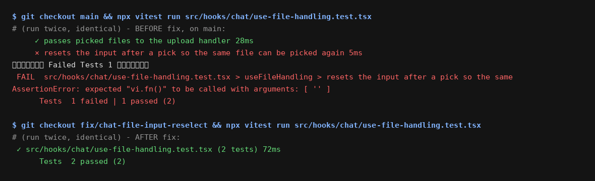

The chat attachment picker's change handler consumes e.target.files but leaves the
input's value set. In a real browser, picking the same file again does not fire change while
the value is unchanged, so after removing an attachment chip the user cannot re-attach that file - the click
opens the picker, the pick is silently ignored. The fix clears the input (value = "") after the files
are consumed; the regression test asserts the reset so jsdom captures the browser contract.
